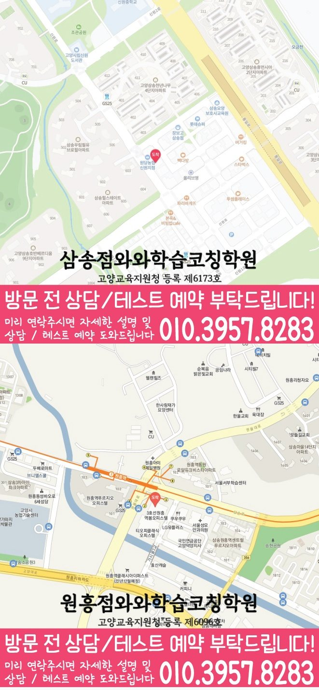

와와학습코칭센터 원흥점
경기 고양시 덕양구 권율대로 672 원흥역봄오피스텔 217호
GRADE 3 MATH LOCAL GUIDE
와와학습코칭센터 원흥점의 위치와 과목별 가능 학년을 확인하고, 초3 수학 상담에 필요한 학교·학습 자료를 준비해 보세요.
와와학습코칭센터 원흥점의 수학 가능 학년 안내: 초3. 현재 수업 시간·반 편성·정원은 상담에서 확인해 주세요.
경기 고양시 덕양구 권율대로 672 원흥역봄오피스텔 217호
현재 반 편성과 시간표는 상담에서 확인
고양교육지원청 등록 제6096호
통합 상담 전화 010-6839-8283 · 문의할 때 와와학습코칭센터 원흥점과 학생의 학년을 말씀해 주세요.
교습비 자료의 과목·수업 시간·횟수와 별도 비용을 상담 내용과 함께 확인해 주세요.
아래는 가정에서 활용하는 일반 학습 점검 예시입니다. 현재 학교·교재에서 배우는 내용에 해당할 때 활용하고, 아직 배우지 않은 내용은 현재 진도에 맞춰 확인해 주세요. 학생의 학습 수준과 센터의 실제 수업 구성은 상담에서 확인할 수 있습니다.
답을 계산한 뒤 같은 수씩 묶거나 나누는 그림으로 설명할 수 있나요?
직접 확인할 예 24개를 6개씩 묶으면 4묶음입니다. 24 ÷ 6 = 4에서 각 수가 무엇을 뜻하는지 말해 보세요.
분수를 비교할 때 전체의 크기와 나눈 조각 수가 같은지 확인했나요?
직접 확인할 예 같은 크기의 종이를 각각 8등분하면 3/8보다 5/8이 큽니다. 전체가 다른 그림에서는 조각 수만으로 비교하지 않도록 살펴보세요.
문제에서 아는 수와 구하는 수를 나누어 표시했나요?
직접 확인할 예 연필이 한 묶음에 6자루씩 3묶음 있다면 6 × 3 = 18자루입니다. 18이라는 답에 알맞은 단위를 붙여 보세요.
틀린 문제에서 놓친 조건, 처음 막힌 계산 줄, 답을 확인한 방법을 적어 보세요. 해설을 덮고 다시 풀 때 같은 줄에서 멈추는지 확인하고, 해결하지 못한 부분은 질문으로 남겨 주세요.
교재 이름·쪽수와 혼자 해결한 부분을 함께 표시하면 상담에서 현재 학습 상태를 설명하기 쉽습니다.
제공 자료의 초등학교 참고 목록: 삼송초등학교, 원흥초등학교.
학교 목록은 지역 참고 자료입니다. 해당 학교별 반 운영이나 시험 대비 수업을 확인한 정보는 아닙니다. 학생이 사용하는 교재, 실제 과목명·진도, 시험 범위 안내와 최근 오답을 준비해 주세요.
계산 과정을 어디까지 설명해야 하는지, 오답의 이유를 어떻게 확인하는지, 다시 풀 문제와 결과를 어떻게 기록하는지 질문해 보세요.
위의 센터 정보에 적힌 가능 학년을 확인하고 현재 시간표·반 편성·과목 범위를 문의해 주세요. 이 질문과 학습 예시는 센터의 확정된 수업 방식이나 제공 서비스를 뜻하지 않습니다.
와와학습코칭센터 원흥점의 수학 가능 학년 안내: 초3. 현재 수업 시간·반 편성·정원은 상담에서 확인해 주세요.
학교 참고 목록은 삼송초등학교, 원흥초등학교입니다. 학교별 전용 반 개설 여부는 별도로 확인해 주세요. 재학 학교와 학년을 알려 주고 학교 학습지, 단원평가 자료와 사용하는 교재를 바탕으로 상담할 수 있습니다.
풀이가 남은 문제와 최근 시험지를 준비해 보세요. 학생이 혼자 해결한 부분과 도움이 필요했던 부분을 표시하고, 희망하는 수업 요일·시간도 함께 정리하면 좋습니다.
센터의 교습비 자료와 상담에서 과목·횟수·수업 시간을 대조해 주세요. 교재비 등 별도 비용, 결석 시 보강 기준과 과제 피드백 방식도 함께 확인하면 좋습니다.
CONSULTATION SCENARIO
아래 두 장면은 초3 수학 상담 전에 준비할 자료와 질문을 정리한 점검 예시입니다.
가정 상담 장면: 삼송동의 한 학부모가 최근 자료 가운데 수 감각과 계산 원리에서 막힌 문제와 문장제 해석 관련 학습 기록을 나눠 가져오고, 초3 수학 상담에서 제안할 첫 주 확인 항목과 다음 점검일을 질문하는 상황을 가정할 수 있습니다. 이 초3 수학 상담 장면은 실제 이용 후기나 특정 학생의 성과가 아니며, 상담 준비용 가상 예시입니다. 삼송동에서 초3 수학을 공부하는 학생의 학습 결과는 출발점과 실천 정도에 따라 달라질 수 있습니다.
비교 상담 장면: 삼송동에서 초3 수학을 공부하는 학생의 학교 일정과 통학 가능 시간을 적어 두고 와와학습코칭센터 원흥점에서 오답 재확인 습관 관련 기록을 확인하는 방식, 과제 조절 기준, 학부모 공유 항목을 묻는 장면을 생각해 볼 수 있습니다. 이 초3 수학 상담 장면에서 비교할 항목은 학생의 실제 자료와 가능한 일정에 맞춰 조정해야 합니다.


와와학습코칭센터 원흥점의 위치와 삼송동 생활권을 기준으로 초3 수학 상담 정보를 확인합니다. 방문 전 실제 이동 동선과 상담 가능 시간을 함께 확인해 주세요.